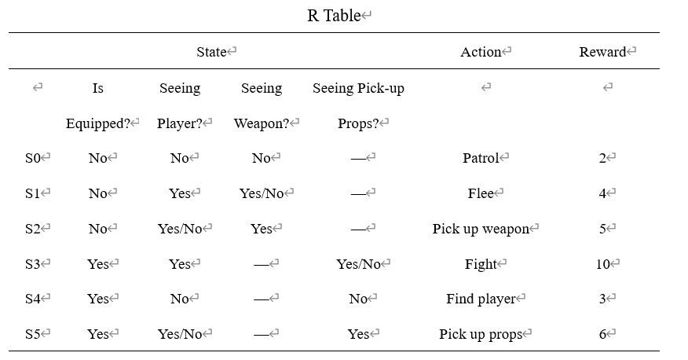
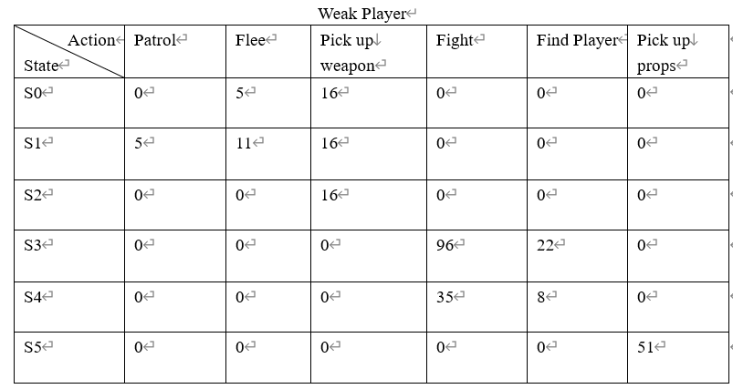
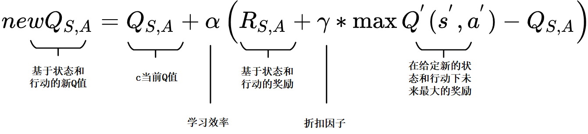
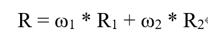
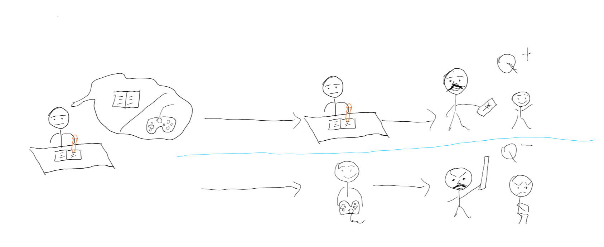

Game AI System Based on Q-Learning Algorithm
My graduation thesis project
Obtained outstanding graduation thesis of CQUT in 2020
Brief Introduction
Nowadays, in many games, there is a game AI system to interact with players, but most of them has logic bugs. For example, In NBA2K Series,
NPC players will do double-team when the player gets points to a certain value, for example 40 points. It is reasonable for NPCs to do act of
double-team when player plays an important role in attacking, but it is unreasonable for NPCs to do act of double-team when player keeps passing the ball to teammates to get points.
NPCs in NBA2K won’t stop doubling the player although the player keeps passing the ball, and there are also many game
AI systems similar with NBA 2K’s game AI system. Such kinds of game AI with low intelligence may cause players to lose interests in the game.
Therefore, the traditional game AI system needs to introduce powerful Artificial Intelligence algorithms to improve the intelligence of game AI and meet players’ needs.
To improve game AI’s intelligence, this project improves the game AI system based on UE4's behavior tree by using a Q-Learning algorithm and semi-supervised learning method.
After many training tests and verification, the behavioral decision-making ability of game AI has been shown improved to a certain extent.
Game AI can change the mechanism of behavior decision
according to the different players’ operation level. It also balances the gameplay and the intelligence of game AI to a certain extent.
Demo Video for part of results

The figure above is the reward function table used in the system, which is R1 in R function.
States in Q-table are referred to the R table.
The demo video begins with two simulations of game NPC (non-player character) facing a player with higher combat ability, NPC's decision will be made according to first Q-table:
Q-Table when NPC meets strong player
- When NPC is equipped with a weapon，NPC sees the player and the death prop(which can make the player die immediately) at the same time, NPC has two choices——fight with the player/pick up the prop，NPC chooses to avoid fighting and pick up the prop, to get better result.
- When NPC is not equipped with a weapon, NPC sees both the player and the weapon, at this point NPC has two options -- flee/pick up weapons and then fight the player, and it chooses to flee for better result. Later，the video shows that under default behavior tree (not improved)，under the same conditions, since the priority of picking up weapon is higher, the NPC chooses to pick up the weapon.
Then，the video shows two simulations when the NPC facing a player with weaker combat ability,NPC's decision will be made according to second Q-table::

Q-Table when NPC meets weak player
- When NPC is equipped with a weapon，NPC sees the player and the death prop, NPC chooses to fight with the player for better result.
- When NPC is not equipped with a weapon, NPC sees both the player and the weapon, NPC chooses to pick up the weapon and then fight with the player.
Brief Introduction of Q-Learning
The figure above shows Q function in Q-Learning algorithm.

The figure above shows R function( reward function)
An simple example.

Assume that we are in doing homework state, and we have been never tried playing games while doing homework before, so we have two options now:
1, Continue doing homework;
2, Playing games.
Since we have never been punished before, so we choose to play games. When parents come back, they find us are playing games without finishing homework.
Then parents punish us, we get penalty value(negative Q value) at this time. We put this experience in memory, and realize that the behavior of playing games without finishing homework
will bring negative result,(set the Q value of playing games under doing homework state as negative value).
Next time, under doing homework state and facing the two options, we will choose the action with better result, continue doing homework to get better result.
Similar with the example, at the beginning, NPC knows nothing about game environment（all state-action value are 0 in Q Table). NPC gains rewards or penalties by constantly interacting with the game environment and using the Q function to update Q values of different actions under different states. As Q value converges to a certain value, many steps of learning are needed to get it. Therefore, some researches artificially construct a state-action reward function table (R-value table) by experience, which provides certain prior knowledge for agents.